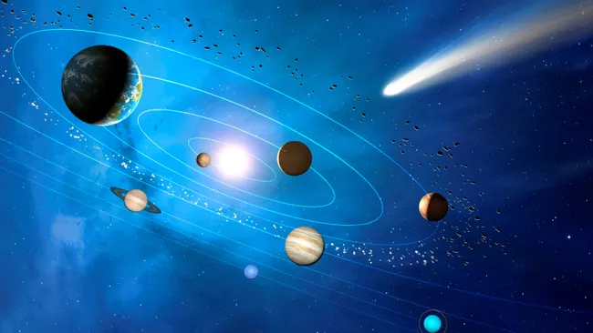
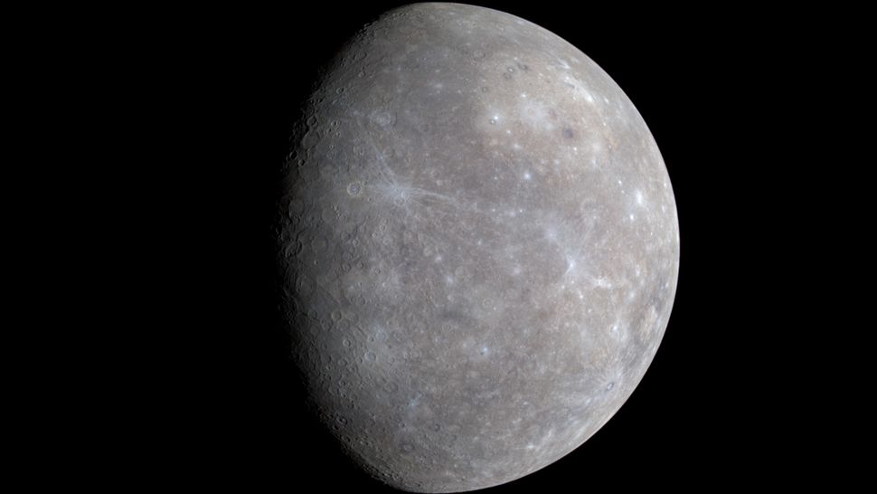
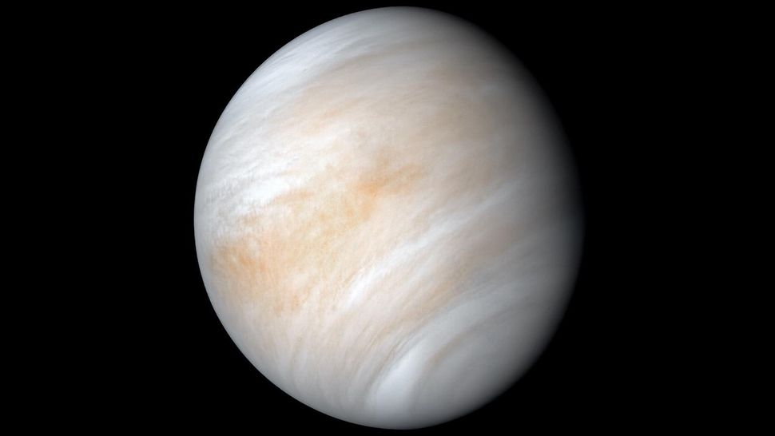
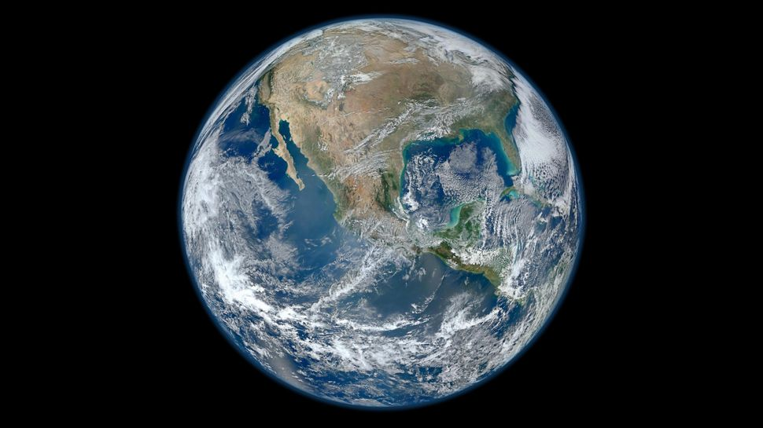
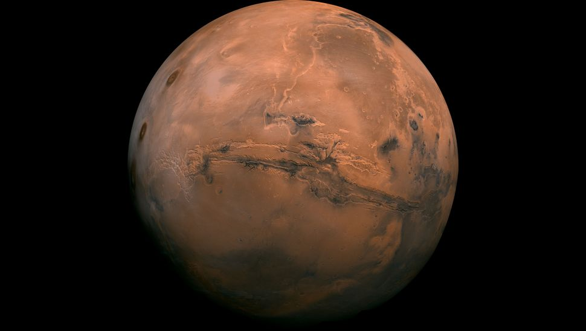
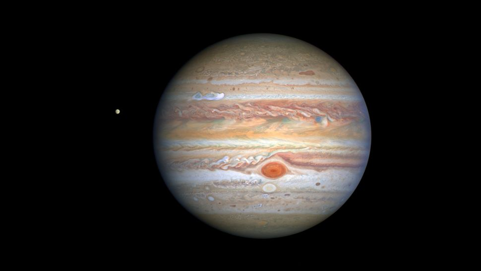
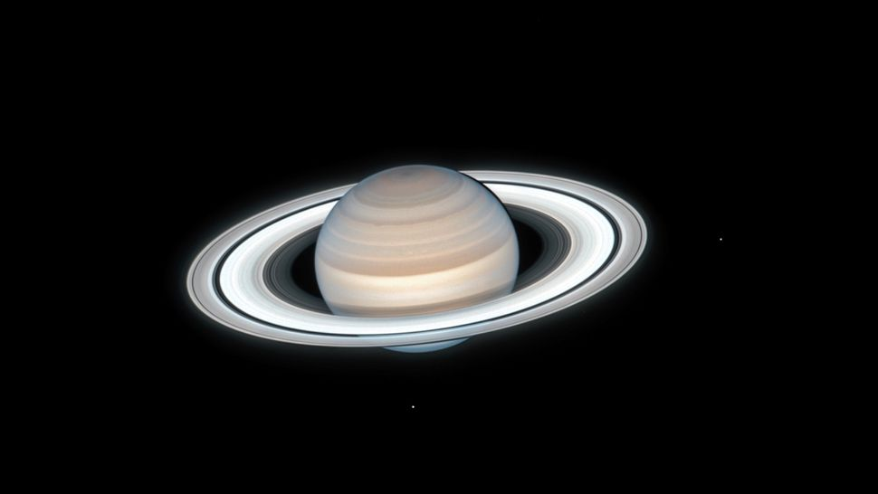
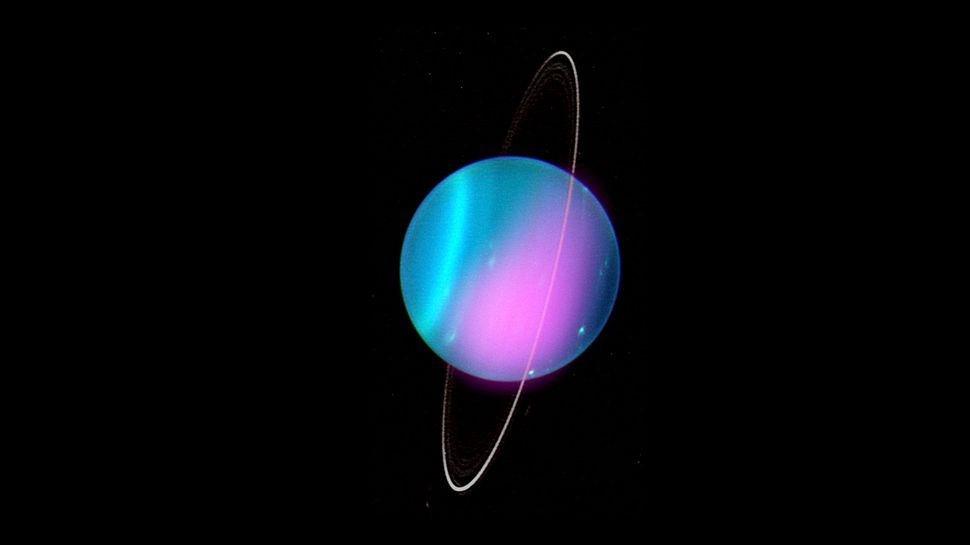
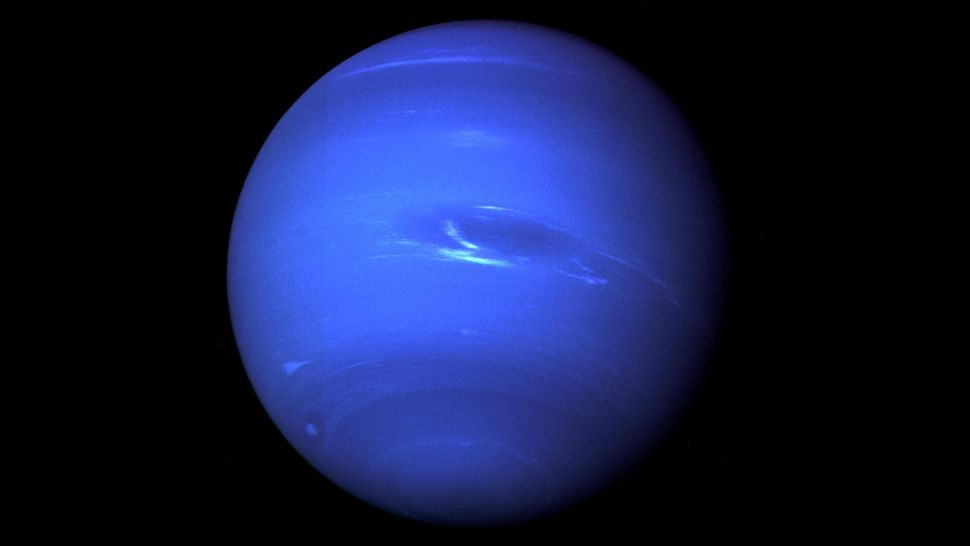
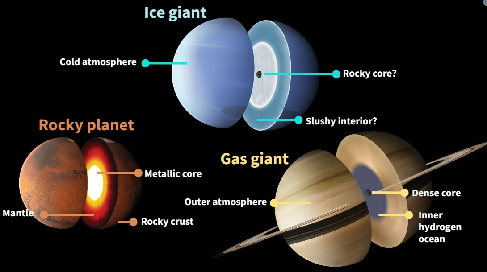

Explore our solar system's planets from the nearest to the sun to the furthest:
The order of the planets in the solar system, starting nearest the sun and working outward is the following: Mercury, Venus, Earth, Mars, Jupiter, Saturn, Uranus, Neptune and then the possible Planet Nine. The solar system extends from the sun, goes past the four inner planets, through the asteroid belt to the four gas giants and on to the disk-shaped Kuiper Belt and far beyond to the teardrop-shaped heliopause. Scientists estimate that the edge of the solar system is about 9 billion miles (15 billion kilometers) from the sun. Beyond the heliopause lies the giant, spherical Oort Cloud, which is thought to surround the solar system.
Ever since the discovery of Pluto in 1930, kids grew up learning that the solar system has nine planets. That all changed in the late 1990s when astronomers started arguing about whether Pluto was indeed a planet. In a highly controversial decision, the International Astronomical Union ultimately decided in 2006 to designate Pluto as a "dwarf planet," reducing the list of the solar system's true planets to just eight.
If you insist on including Pluto, it would come after Neptune on the list. Pluto is truly way out there and on a wildly tilted, elliptical orbit (two of the several reasons it was demoted). Astronomers, however, are still hunting for another possible planet in our solar system, a true ninth planet, after mathematical evidence of its existence was revealed on Jan. 20, 2016. The alleged "Planet Nine," also called "Planet X," is believed to be about 10 times the mass of Earth and 5,000 times the mass of Pluto.
| Planet | Diameter (km) |
Rotation Period (in Earth Days) |
Revolution Period (in Earth Days) |
Average Temperature (°C) |
Surface Composition | Rings And Moons | Travel Time From Earth | Detailed Info About Planet |
|---|---|---|---|---|---|---|---|---|
|

Mercury |
5,879 | 58.66 | 88 | 173° | Rocky | 0 | 5 Months | Click Here |
|

Venus |
12,104 | 243 | 224 | 482° | Rocky | 0 | 3 Months | Click Here |
|

Earth |
12,756 | 1 | 365.25 | 15° | Rocky | 1 Moon | - | Click Here |
|

Mars |
6,756 | 1.03 | 687 | -63° | Rocky | 2 Moons | 8 Months | Click Here |
|

Jupiter |
142,984 | 0.42 | 4,332 | -121° | Gaseous | 60 Moons + Rings | 5 Years | Click Here |
|

Saturn |
120,536 | 0.45 | 10,775 | -125° | Gaseous | 31 Moons + Rings | 7 Years | Click Here |
|

Uranus |
51,118 | 0.71 | 30,681 | -193° | Gaseous | 27 Moons + Rings | 10 Years | Click Here |
|

Neptune |
49,528 | 0.67 | 60,193 | -173° | Gaseous | 13 Moons + Rings | 12 Years | Click Here |
The inner four planets closest to the sun — Mercury, Venus, Earth and Mars — are often called the "terrestrial planets" because their surfaces are rocky. Pluto also has a rocky, albeit frozen, surface but has never been grouped with the four terrestrials. The four large outer worlds — Jupiter, Saturn, Uranus and Neptune — are sometimes called the Jovian or "Jupiter-like" planets because of their enormous size relative to the terrestrial planets. They're also mostly made of gases like hydrogen, helium and ammonia rather than of rocky surfaces, although astronomers believe some or all of them may have solid cores.
Jupiter and Saturn are sometimes called the gas giants, whereas the more distant Uranus and Neptune have been nicknamed the ice giants. This is because Uranus and Neptune have more atmospheric water and other ice-forming molecules, such as methane, hydrogen sulfide and phosphene, that crystallize into clouds in the planets' frigid conditions, according to the Planetary Society. For perspective, methane crystallizes at minus 296 Fahrenheit (minus 183 degrees Celsius), according to the U.S. National Library of Medicine.
The IAU defines a true planet as a body that circles the sun without being some other object's satellite; is large enough to be rounded by its own gravity (but not so big that it begins to undergo nuclear fusion, like a star); and has "cleared its neighborhood" of most other orbiting bodies. But that restrictive definition helped isolate what should and should not be considered a planet — a problem that arose as astronomers discovered more and more planet-like objects in the solar system. Pluto was among the bodies that didn't make the cut and was re-classified as a dwarf planet. The problem with Pluto, aside from its small size and offbeat orbit, is that it doesn't clear its neighborhood of debris — it shares its space with lots of other objects in the Kuiper Belt. Still, the demotion of Pluto remains controversial.
The IAU planet definition also put other small, round worlds into the dwarf planet category, including the Kuiper Belt objects Eris, Haumea and Makemake. Ceres, a round object in the Asteroid Belt between Mars and Jupiter, also got the boot. Ceres was considered a planet when it was discovered in 1801, but it was later deemed to be an asteroid. That still didn't quite fit because it was so much larger (and rounder) than the other asteroids. Astronomers instead deemed it a dwarf planet in 2006, although some astronomers like to consider Ceres as a 10th planet (not to be confused with Nibiru or Planet X). Below is a brief overview of the eight true planets in our solar system, moving from that closest to the sun to the farthest from the sun:
The sun is by far the largest object in our solar system, containing 99.8% of the solar system's mass. It sheds most of the heat and light that makes life possible on Earth and possibly elsewhere. Planets orbit the sun in oval-shaped paths called ellipses, with the sun slightly off-center of each ellipse. NASA has a fleet of spacecraft observing the sun, such as the Parker Solar Probe, to learn more about its composition, and to make better predictions about space weather and its effect on Earth.
Mercury is the closest planet to the sun and the smallest planet in the solar system — it is only a little larger than Earth's moon. Mercury zips around the sun in only 88 days and because it is so close to our star (about two-fifths the distance between Earth and the sun). Mercury experiences dramatic changes in its day and night temperatures. Mercury temperatures can reach a scorching 840 F (450 C) in the day, which is hot enough to melt lead. Meanwhile, on the night side, temperatures drop to minus 290 F (minus 180 C).
Mercury's atmosphere is very thin and primarily composed of oxygen, sodium, hydrogen, helium and potassium. Because the atmosphere is so thin it cannot deflect incoming meteors, its surface is therefore pockmarked with craters, just like our moon. Over its four-year mission, NASA's MESSENGER spacecraft revealed incredible discoveries that challenged astronomers' expectations. Among those findings was the discovery of water ice and frozen organic compounds at Mercury's north pole and that volcanism played a major role in shaping the planet's surface.
Venus is the second planet from the sun and is the hottest planet in the solar system. Its thick atmosphere is extremely toxic and composed of sulfuric acid clouds, the planet is an extreme example of the greenhouse effect. The average temperature on Venus' surface is 900 F (465 C). At 92 bar, the pressure at the surface would crush and kill you. And oddly, Venus spins slowly from east to west, the opposite direction of most of the other planets. Venus is sometimes referred to as Earth's twin as they are similar in size and radar images beneath its atmosphere reveal numerous mountains and volcanoes. But beyond that, the planets could not be more different. The Greeks believed Venus was two different objects — one in the morning sky and another in the evening. Because it is often brighter than any other object in the sky, Venus has generated many UFO reports.
Earth, our home planet, is the third planet from the sun. It is a water world with two-thirds of the planet covered by water. Earth's atmosphere is rich in nitrogen and oxygen and it is the only world known to harbor life. Earth rotates on its axis at 1,532 feet per second (467 meters per second) — slightly more than 1,000 mph (1,600 kph) — at the equator. The planet zips around the sun at more than 18 miles per second (29 km per second).
Mars is the fourth planet from the sun. It is a cold, desert-like planet covered in iron oxide dust that gives the planet its signature red hue. Mars shares similarities with Earth: It is rocky, has mountains, valleys and canyons, and storm systems ranging from localized tornado-like dust devils to planet-engulfing dust storms. Substantial scientific evidence suggests that Mars at one point billions of years ago was a much warmer, wetter world, rivers and maybe even oceans existed. Although Mars' atmosphere is too thin for liquid water to exist on the surface for any length of time, remnants of that wetter Mars still exist today. Sheets of water ice the size of California lie beneath Mars' surface, and at both poles are ice caps made in part of frozen water
Scientists also think ancient Mars would have had the conditions to support life like bacteria and other microbes. Hope that signs of this past life — and the possibility of even current lifeforms — may exist on the Red Planet has driven numerous Mars missions and the Red Planet is now one of the most explored planets in the solar system.
Jupiter is the fifth planet from the sun and the largest planet in the solar system. The gas giant is more than twice as massive as all the other planets combined, according to NASA. Its swirling clouds are colorful due to different types of trace gases including ammonia ice, ammonium hydrosulfide crystals as well as water ice and vapor.
A famous feature in its swirling clouds is Jupiter's Great Red Spot, a giant storm more than 10,000 miles wide, first observed in 1831 by amateur astronomer Samuel Heinrich Schwabe. It has raged at more than 400 mph for the last 150 years, at least. Jupiter has a strong magnetic field, and with 75 moons, including the largest moon in the solar system, Ganymede.
Saturn is the sixth planet from the sun and is famous for its large and distinct ring system. Though Saturn is not the only planet in the solar system with rings. When polymath Galileo Galilei first studied Saturn in the early 1600s, he thought it was an object with three parts: a planet and two large moons on either side. Not knowing he was seeing a planet with rings, the stumped astronomer entered a small drawing — a symbol with one large circle and two smaller ones — in his notebook, as a noun in a sentence describing his discovery. More than 40 years later, Christiaan Huygens proposed that they were rings. The rings are made of ice and rock and scientists are not yet sure how they formed. The gaseous planet is mostly hydrogen and helium and has numerous moons.
Uranus is the seventh planet from the sun and is a bit of an oddball. It has clouds made of hydrogen sulfide, the same chemical that makes rotten eggs smell so foul. It rotates from east to west like Venus. But unlike Venus or any other planet, its equator is nearly at right angles to its orbit — it basically orbits on its side Astronomers believe an object twice the size of Earth collided with Uranus roughly 4 billion years ago, causing Uranus to tilt. That tilt causes extreme seasons that last 20-plus years, and the sun beats down on one pole or the other for 84 Earth-years at a time.
The collision is also thought to have knocked rock and ice into Uranus' orbit. These later became some of the planet's 27 moons. Methane in Uranus' atmosphere gives the planet its blue-green tint. It also has 13 sets of faint rings. Uranus holds the record for the coldest temperature ever measured in the solar system — minus 371.56 degrees F (minus 224.2 degrees C). The average temperature of Uranus is minus 320 degrees Fahrenheit (-195 degrees Celsius).
Neptune is the eighth planet from the sun and is on average the coldest planet in the solar system. The average temperature of Neptune at the top of the clouds is minus 346 degrees Fahrenheit (minus 210 degrees Celsius). Neptune is approximately the same size as Uranus and is known for its supersonic strong winds. The planet is more than 30 times as far from the sun as Earth.
Neptune was the first planet predicted to exist by using math, rather than being visually detected. Irregularities in the orbit of Uranus led French astronomer Alexis Bouvard to suggest some other planet might be exerting a gravitational tug. German astronomer Johann Galle used calculations to help find Neptune in a telescope. Neptune is about 17 times as massive as Earth and has a rocky core.
NeptunePluto was once the ninth planet from the sun and is unlike any other planet in the solar system. It is smaller than Earth's moon; its orbit is highly elliptical, falling inside Neptune's orbit at some points and far beyond it at others; and Pluto's orbit doesn't fall on the same plane as all the other planets — instead, it orbits 17.1 degrees above or below. It is smaller than Earth's moon; its orbit is highly elliptical, falling inside Neptune's orbit at some points and far beyond it at others; and Pluto's orbit doesn't fall on the same plane as all the other planets — instead, it orbits 17.1 degrees above or below, taking 288 years to complete a single orbit according to ESA.
NeptuneFrom 1979 until early 1999, Pluto had been the eighth planet from the sun. Then, on Feb. 11, 1999, it crossed Neptune's path and once again became the solar system's most distant planet — until it was redefined as a dwarf planet. It's a cold, rocky world with a tenuous atmosphere. Scientists thought it might be nothing more than a hunk of rock on the outskirts of the solar system. But when NASA's New Horizons mission performed history's first flyby of the Pluto system on July 14, 2015, it transformed scientists' view of Pluto. Pluto is a very active ice world that's covered in glaciers, mountains of ice water, icy dunes and possibly even cryovolcanoes that erupt icy lava made of water, methane or ammonia.
In 2016, researchers proposed the possible existence of a ninth planet, for now, dubbed "Planet Nine" or Planet X. The planet is estimated to be about 10 times the mass of Earth and to orbit the sun between 300 and 1,000 times farther than the orbit of the Earth. Scientists have not seen Planet Nine. They inferred its existence by its gravitational effects on other objects in the Kuiper Belt, a region at the fringe of the solar system that is home to icy rocks left over from the birth of the solar system. Also called trans-Neptunian objects, these Kuiper Belt objects have highly elliptical or oval orbits that align in the same direction. Scientists Mike Brown and Konstantin Batygin at the California Institute of Technology in Pasadena described the evidence for Planet Nine in a study published in the Astronomical Journal. The research is based on mathematical models and computer simulations using observations of six other smaller Kuiper Belt Objects with orbits that aligned in a similar matter.
A hypothesis proposed in September 2019 on the pre-print server arXiv suggests Planet Nine might not be a planet at all. Instead, Jaku Scholtz of Durham University and James Unwin of the University of Illinois at Chicago speculate it could be a primordial black hole that formed soon after the Big Bang and that our solar system later captured, according to Newsweek. Unlike black holes that form from the collapse of giant stars, primordial black holes are thought to have formed from gravitational perturbations less than a second after the Big Bang, and this one would be so small (5 centimeters in diameter) that it would be challenging to detect. Astronomers continue to come up empty in their search for Planet 9. A recent 2022 sky survey using the 6-meter Atacama Cosmology Telescope (ACT) in Chile found thousands of tentative candidate sources but none could be confirmed.
Approximately 4.5 billion years ago a dark cloud of gas and dust began to collapse. As it shrank, the cloud flattened into a swirling disk known as a solar nebula, according to NASA Science. The heat and pressure eventually became so high that hydrogen atoms began to combine to form helium. The nuclear reactions released vast amounts of energy and our sun was formed. The sun accumulated about 99% of the available matter and the remaining material further from the sun formed smaller clumps inside the spinning disk. Some of these clumps gained enough mass that their gravity shaped them into spheres, becoming planets, dwarf planets and moons. Other leftover pieces became asteroids, comets and smaller moons that make up our solar system.
For millennia, astronomers have followed points of light that seemed to move among the stars. The ancient Greeks named them planets, meaning "wanderers." Mercury, Venus, Mars, Jupiter and Saturn were known in antiquity, and the invention of the telescope added the Asteroid Belt, Uranus, Neptune, Pluto and many of these worlds' moons. The dawn of the space age saw dozens of probes launched to explore our system, an adventure that continues today. There have been five human-made objects so far, Voyager 1, Voyager 2, New Horizons, Pioneer 10 and Pioneer 11, that have crossed the threshold into interstellar space.
1 3